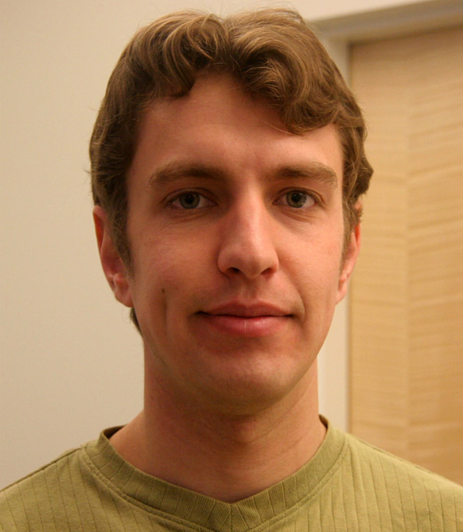

FragFlow: Automated Fragment Detection in Scientific Workflows
This page represents a Research Object containing different additional materials for a paper accepted in the e-Science 2014 conference. The purpose of this web page is to provide a summary of the paper, support links and short descriptions of the contents used as input and generated as output of the described work. A copy of the paper is available here. The software described in the paper is under development and avialable at Github
Abstract
Scientific workflows provide the means to define, execute and reproduce computational experiments. However, reusing existing workflows still poses challenges for workflow designers. Workflows are often too large and too specific to reuse in their entirety, so reuse is more likely to happen for fragments of workflows. These fragments may be identified manually by users as sub-workflows, or detected automatically. In this paper we present the FragFlow approach, which detects workflow fragments automatically by analyzing existing workflow corpora with graph mining algorithms. FragFlow detects the most common workflow fragments, links them to the original workflows and visualizes them. We evaluate our approach by comparing FragFlow results against user-defined sub-workflows from three different corpora of the LONI Pipeline system. Based on this evaluation, we discuss how automated workflow fragment detection could facilitate workflow reuse.
Inputs and examples of the analysis
The FragFlow approach follows several steps, detailed in the following Figure:

First, a data preparation step is necessary to filter and format the workflow corpus. Then a graph mining algorithm is applied (depending on the choice of the user), and the results filtered. Finally the results are visualized, statistics are calculated, and the fragments are linked to the workflows of the corpus where fragments appear.
We tested our approach on three different workflow corpora created with the LONI Pipeline workflow system. We obtained two corpora from two different users, containing all the workflows created by them or in collaboration with other people. A third corpus contains the runs of 62 unique users submitted to the LONI Pipeline servers during January 2014.
- User Corpus 1 (WC1): A set of 790 workflows (475 workflows after applying our filtering) designed mostly by a single user. Some of the workflows are product of collaborations with other users, which produced different versions of workflows originally produced by this user. The domain of the workflows is in general medical imaging (brain image understanding, 3D skull imaging, genetic modeling of the face, etc.), and some are still used by the LONI Pipeline community. Other workflows were designed for a specific purpose and are not reused anymore.
- User Corpus 2 (WC2) A set of 113 well-documented workflows (96 after filtering) created and validated by one user, sometimes in collaboration with others. Most of the workflows have been made public for others to reuse6, and range from neuroimaging to genomics. Some of the workflows were developed as early as 2007, and many of them are being used in different institutions.
- Multi-user Corpus 3 (WC3) A set of 5859 workflows (357 after filtering), submitted to LONI pipeline for execution by 62 different users over the time lapse of a month (Jan 2014). The number of filtered workflows descends drastically from the input corpus as many of the executions are on the same workflow or are one component workflows designed for testing.
After being processed and filtered, these are the input files generated for the SUBDUE and Gspan algorithms:
Results of the analysis
Several resources summarize the results of the paper:
- An excel file summarizing the performance of each algorithm, according to the metrics defined in the paper (precision, recall)
- An excel file summarizing the grouping usage in the workflow corpora
- Two files with the preliminary evaluation by two users validating our approach (user 1, user 2).
The results of the algorithms in detail can be accessed below:
About the authors
 |
Daniel Garijo is a PhD student in the Ontology Engineering Group at the Artificial Intelligence Department of the Computer Science Faculty of Universidad Politécnica de Madrid. His research activities focus on e-Science and the Semantic web, specifically on how to increase the understandability of scientific workflows using provenance, metadata, intermediate results and Linked Data. |
 |
Oscar Corcho is an Associate Professor at Departamento de Inteligencia Artificial (Facultad de Informática , Universidad Politécnica de Madrid) , and he belongs to the Ontology Engineering Group. His research activities are focused on Semantic e-Science and Real World Internet. In these areas, he has participated in a number of EU projects (Wf4Ever, PlanetData, SemsorGrid4Env, ADMIRE, OntoGrid, Esperonto, Knowledge Web and OntoWeb), Spanish Research and Development projects (CENITS mIO!, España Virtual and Buscamedia, myBigData, GeoBuddies), and has also participated in privately-funded projects like ICPS (International Classification of Patient Safety), funded by the World Health Organisation, and HALO, funded by Vulcan Inc. |
 |
Yolanda Gil Yolanda Gil is Director of Knowledge Technologies and at the Information Sciences Institute of the University of Southern California, and Research Professor in the Computer Science Department. Her research interests include intelligent user interfaces, social knowledge collection, provenance and assessment of trust, and knowledge management in science. Her most recent work focuses on intelligent workflow systems to support collaborative data analytics at scale. |
|  | Boris A. GutmanPost Doctoral Scholar at the Institute for Neuroimaging and Informatics, University of Southern California. |
| Ivo D. Dinov Dr. Dinov is the Director of the Statistics Online Computational Resource (SOCR) and is an expert in mathematical modeling, statistical analysis, computational processing and scientific visualization of large datasets (Big Data). His applied research is focused on nursing informatics, multimodal biomedical image analysis, and distributed genomics computing. Examples of specific brain research projects Dr. Dinov is involved in include longitudinal morphometric studies of development (e.g., Autism, Schizophrenia), maturation (e.g,. depression, pain) and aging (e.g., Alzheimer’s disease, Parkinson’s disease). He also studies the intricate relations between genetic traits (e.g., SNPs), clinical phenotypes (e.g., disease, behavioral and psychological test) and subject demographics (e.g., race, gender, age) in variety of brain and heart related disorders. | |
| Paul Thompson Paul Thompson is a Professor at the Neurology Imaging Genetics Center Lab of Neuro Imaging at Institute for Neuroimaging and Informatics (Keck School of Medicine of USC). Paul Thompson's team co-leads the "ENIGMA Consortium" (http://enigma.ini.usc.edu), now performing the largest brain imaging studies in the world. The effort involves 125 institutions and 300 scientists, analyzing brain scans and genomic data from >26,000 people. ENIGMA's working groups are supported by Dr. Thompson's team and 20 leading scientists across Europe and Asia, in large scale projects on depression, schizophrenia, bipolar illness, autism, ADHD, HIV, 22q deletion syndrome, and OCD. | |
| Arthur W. Toga Dr. Toga is Director of the Institute of Neuroimaging and Informatics, Director of the Laboratory of Neuro Imaging, and Provost Professor, Departments of Ophthalmology, Neurology, Psychiatry, and the Behavioral Sciences, Radiology and Engineering. Professor Toga is interested in the development of new algorithms and the computer science aspects important to neuroimaging. New visualization techniques and statistical measurement are employed in the study of morphometric variability in humans, subhuman primates and rodents. His laboratory has been working on the creation of three dimensional digital neuroanatomic and functional neuroanatomic atlases for stereotactic localization and multisubject comparison. |
Acknowledgements
The authors would like to thank Zhizhong Liu, for the help retrieving the workflows, Varun Ratnakar for his technical support and Idafen Santana for his feedback.
This page is licensed under a Creative Commons Attribution-NonCommercial-ShareAlike 2.0 Generic License.